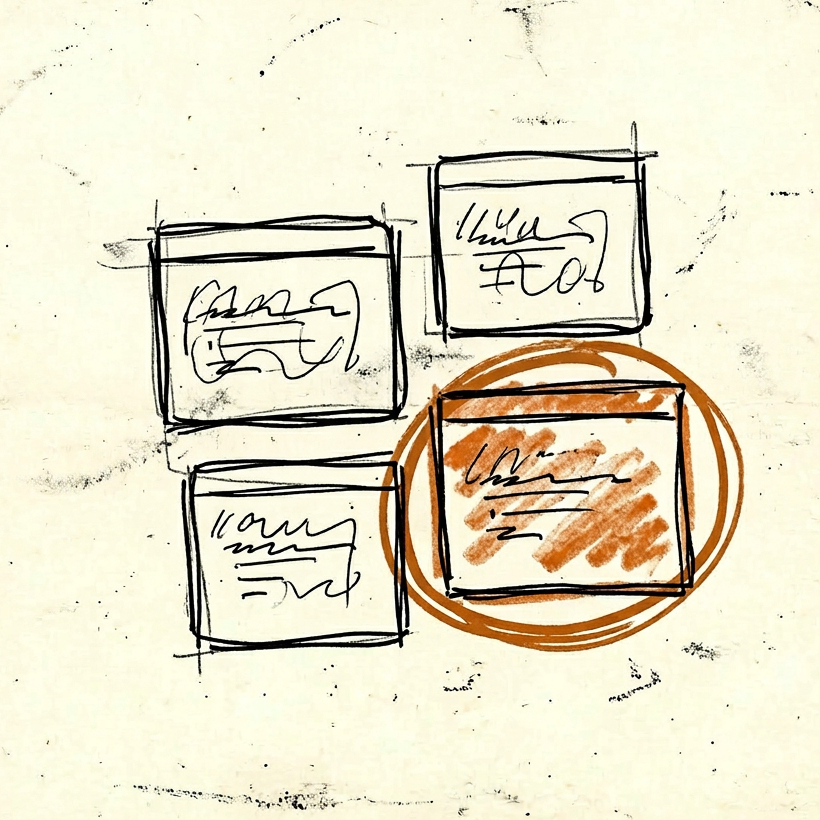

Featured

Claude向けVSCode拡張 Terminal Session Recall を公開した
VSCode の統合ターミナル上で動いている Claude Code CLI のセッションを自動復元する拡張機能を作って公開した。

Yojo（養生）パターン — AI コーダーにシャドーマスクをつける ～時間とトークンの浪費をストップ～
TL;DR 設計変更のとき、AI コーダーに旧設計・旧コードを見せない状態を作ってから実装させる。 「旧設計を無視して」と指示するのではなく、そもそも視野に入れ...

AIに「お前どうやって喋ってるの？」って聞いてみた — 納得するまで問い詰めた
ワードベクトルからRLHFまで、Geminiに根掘り葉掘り聞いた対話記録。

AIに「お前どうやって喋ってるの？」— Part 2: 画像生成から意味空間まで
画像生成のロジック、長文生成、ロングコンテキスト、RAGまで。

AIに「お前どうやって喋ってるの？」— Part 3: モデルの違いから制御システムまで
GPT・Claude・Geminiの違い、RLHFの比喩、オープンモデルの実態まで。
Recent
2026-03-01
Claude Code Remote Control、使ったらすぐ止まる
2026-02-28
[Claude視点] 共犯者の著作権を消した
2026-02-26
AI が俺の曲を AI の曲にした
2026-02-26
Claude Codeの停止ボタン、何が起きて何が起きないか
2026-02-22
Claude Code が勝手に拡張をインストールした
2026-02-21
Claude Code の設定ファイルをリポ間で共有しようとして、やめた話
2026-02-15
「どこが分からないか分からない」娘のために、数学AIチューターを作ってみた
2026-02-15
締め切り直前のAIは、締め切り直前のエンジニアと同じ動きをする 🎖オフィサー・💂ソルジャーパターンの必要性
Archive →